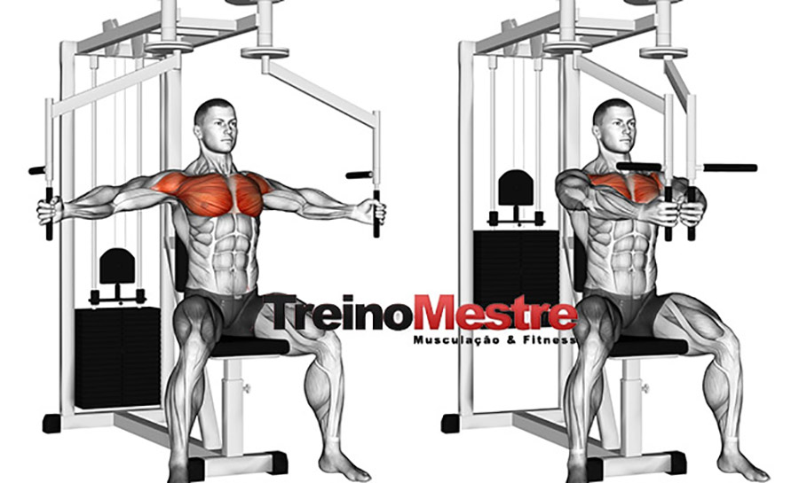

Antes de realizar o crucifixo reto na máquina, é essencial fazer um bom aquecimento para preparar os músculos e evitar lesões. Comece com 5 a 10 minutos de atividade cardiovascular leve, como caminhada ou corrida leve, para aumentar a circulação sanguínea. Em seguida, faça exercícios de mobilidade para os ombros, como círculos e rotações, para melhorar a flexibilidade e estabilizar a articulação. Finalize com alguns alongamentos dinâmicos para o peitoral, como alongamento com a mão na parede, e faça uma ou duas séries de aquecimento com halteres leves, para ativar os músculos do peito e garantir que a técnica está correta antes de começar o treino principal.
O crucifixo reto na máquina é um exercício de isolamento para os músculos do peitoral, com ênfase no peitoral maior, além de trabalhar também os ombros (principalmente o deltoide anterior) e o tríceps. É muito popular em treinos de musculação, especialmente para quem busca desenvolver a parte interna e externa do peito, ou simplesmente melhorar a definição dessa região.
Os cuidados pessoais são fundamentais para garantir um bom desempenho nos exercícios e uma recuperação eficaz. Além de manter uma alimentação balanceada e uma hidratação adequada, é importante garantir que o corpo tenha tempo suficiente para se recuperar entre os treinos. Isso inclui dormir o suficiente, pois o sono é essencial para a regeneração muscular. Evitar o overtraining, ou seja, o excesso de exercícios sem o descanso adequado, é crucial para prevenir lesões. Também é importante ouvir o seu corpo: se sentir dor ou desconforto, é fundamental dar o devido descanso e, se necessário, procurar orientação médica. Por fim, sempre pratique o aquecimento e o alongamento corretamente antes e depois dos treinos para melhorar a flexibilidade e evitar lesões.